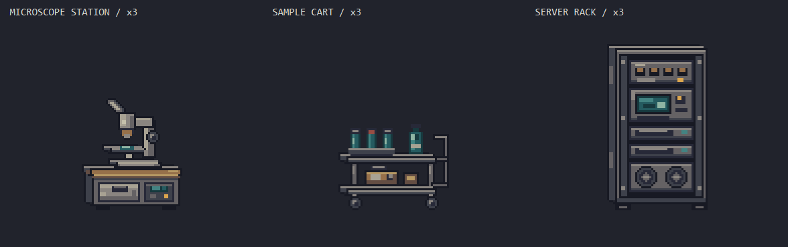
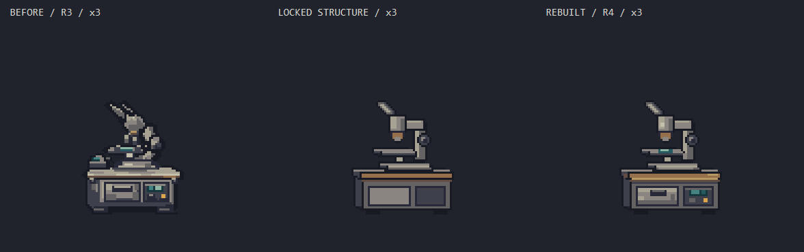
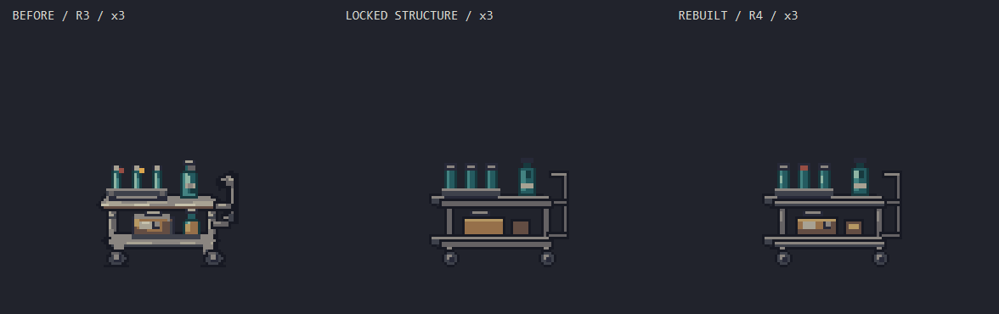
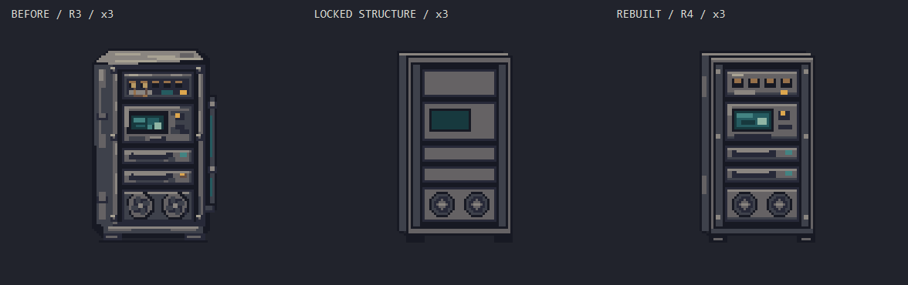
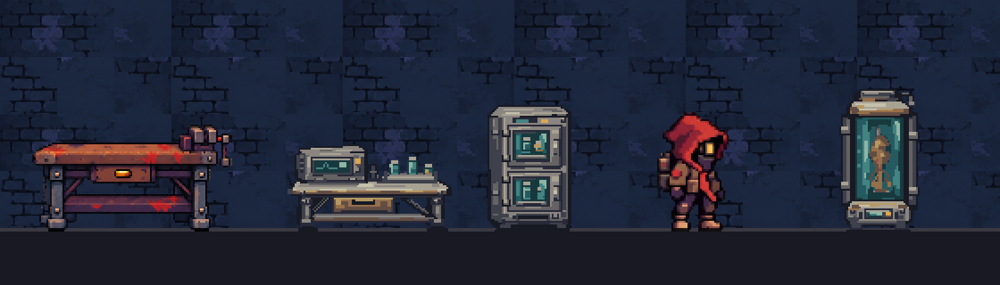

실제 런타임 기준과 저밀도 제작본, Aseprite에서 다시 그린 3차 시험본을 비교합니다. 모든 물체는 같은 아트 픽셀 배율입니다. 큰 물체와 작은 물체를 같은 크기로 늘리지 않습니다.
현재 상태: 과거 재설계 실험 기록 · 원화 보존형 전환으로 미채택 · 게임 미반입
batch2 r4도 톤 불일치 피드백으로 채택되지 않았습니다. 아래 비교와 절차는 당시 기록입니다. 현재 제작 원칙은 ART_GUIDE v1.11 §0의 자연어 요청 → 그림체 가이드로 원화 생성 → 사용자 승인 → 원화 보존형 Aseprite 픽셀화입니다. 보존형 변환 도구와 새 해상도는 아직 미확정입니다.

r3의 일그러짐을 교정했습니다. 현미경 광축과 C 지지대, 동일 두께의 카트 선반·바퀴, 평행한 서버 레일을 먼저 고정했습니다. 아래 비교는 왼쪽부터 r3 / 구조 사본 / r4입니다.



이 추가 제작 이미지는 고정 ×3입니다. 아래 배율 선택기는 이전 3종 비교에 적용됩니다.
자동 맞춤 축소 없이 정수 확대합니다. 넓으면 가로로 스크롤하세요. 브라우저 줌 100% 기준이며 OS 화면 배율은 별도입니다. 각 물체의 최하단 불투명 픽셀을 맞췄습니다.

오프라인 접지 검토용 부분 장면입니다. 엔진 스크린샷이 아니며 바닥 띠는 비교용입니다. 배경은 런타임 월드 텍스처 그대로, 프랍은 네이티브 ×선택 배율입니다. 화면 너비가 좁아도 이미지 자체를 줄이지 않습니다.
작업실에서는 붉은 플레이어가 분리됩니다. 현재 연구시설의 밝은 청회색 배경에서는 금속 중간톤과 대비가 약해집니다. 이를 프랍 전체 밝기 증가로 해결하지 않으며 환경 세트 승인은 보류합니다.
| 단계 | 관찰 | 수정 |
|---|---|---|
| 이전 | 큰 사각형·얇은 테두리만으로 중간 정보가 빠짐 | 규격 통과와 완성 아트를 분리 |
| r1 | 두께가 생겼지만 금속이 평평하고 유리는 긴 띠처럼 보임 | 구조 다음에 재질·기능 패스를 필수화 |
| r2 | 보강대·힌지·클램프가 생김. 중복 테두리·긴 반사가 남음 | 픽셀 변화율이 높아도 검수를 멈추지 않음 |
| r3 | 국소 하이라이트·연결부·곡면 반사를 정리. 기존보다 정돈된 선은 남음 | 밀도 동등성을 점수로 주장하지 않고 비교 증거와 남은 차이를 보존 |
당시 실험은 8~16색 예산을 사용했습니다. 현재 v1.11에서는 일괄 상한을 해제하고 승인 원화의 색·재질 보존에 필요한 팔레트를 자산별로 정합니다. 인접 픽셀 변화율은 원화 충실도를 모르는 진단값이며 합격 점수가 아닙니다.
{kind=link}